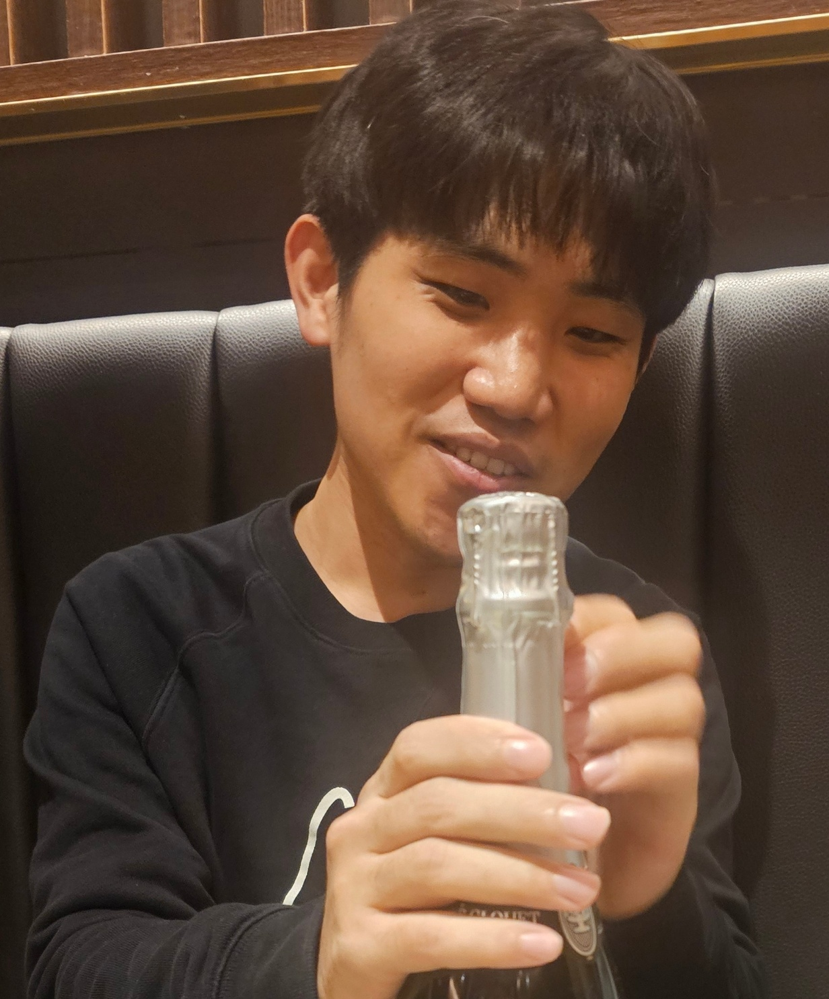

|
 |
Jinwoo Kim
Ph.D Student in Computer Science and Engineering
University of California-San Diego
I am a fourth-year Ph.D. student at UC San Diego, working in the intersection of
programming languages and generative AI with
Loris D'Antoni.
Previously, I did my Masters at UW-Madison also with Loris, then took a leave of absence to perform mandatory military service as a researcher for South Korea with Chung-Kil Hur. Email: Office: 3262 at Computer Science and Engineering Building, UCSD |